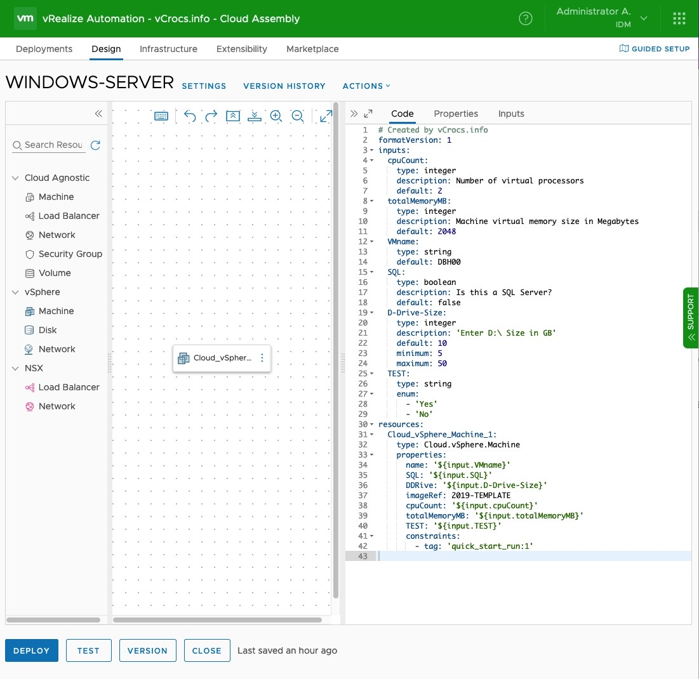
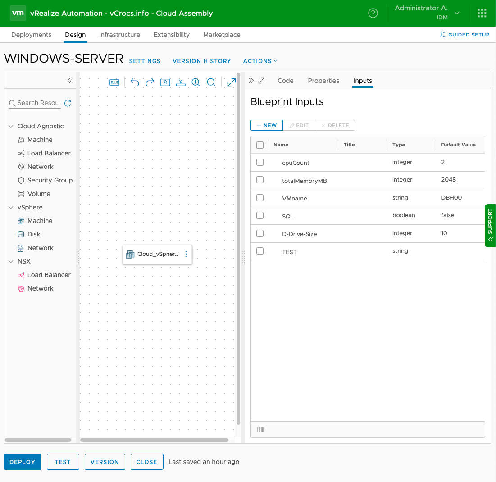
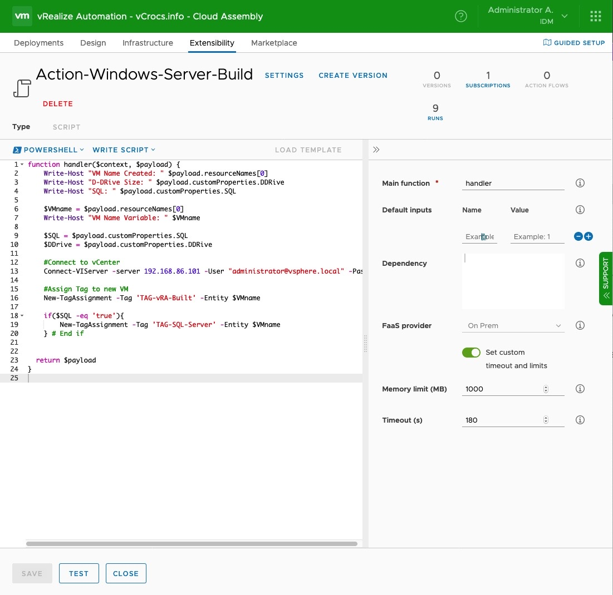
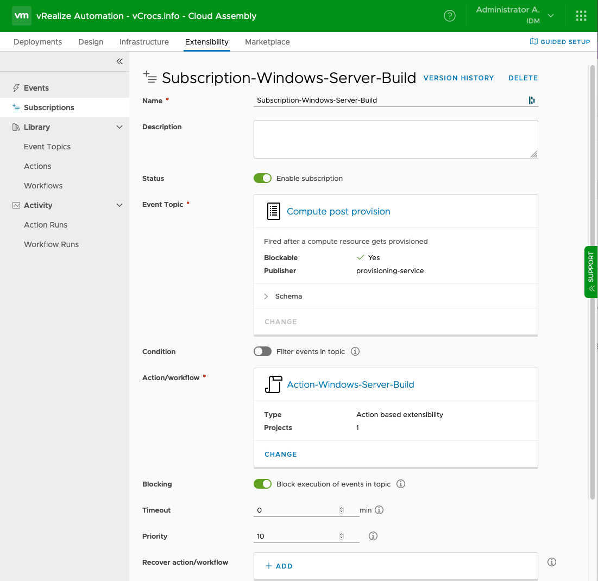

vRealize Automation 8.1 - PowerShell ABX

Options to use PowerShell Modules
I wanted to review VMware vRA (vRealize Automation) 8.x as a Microsoft Windows Server Admin. Most of the reviews you see are creating Linux VMs and customizing the OS using tools for Linux. I am going to create Windows Server VMs and customize the OS using a new feature added to vRA 8.1, Action Based Extensibility (ABX) with PowerShell. No vRO (Orchestrator) Workflows will be used. This is completely different compared to how I create Windows Servers with vRA 7.6.
The enterprise organizations that I have worked for are 90%+ Microsoft Windows Servers. It is important for me to have vRA be able to create Windows Servers and make all configuration changes using PowerShell.
You could also use this technique to make changes to a Linux VM using the PowerCLI commands Invoke-VMscript and Copy-VMGuestFile. I did create a Blog Post on this topic.
BluePrint Requirements:
I want to manually enter the VM Name. I don’t want an auto generated name. After the Windows Server VM is created I want to to able to add vCenter TAGS to VM, make some OS changes, and install software based on values entered on the BluePrint.
What I created to accomplish the requirements:
Created a BluePrint. See included code and screen shot.
Created a PowerShell Action. See included code and screen shot.
Created a Subscription. See Screenshot.
Sample Code and Screen Shots:---
BluePrint:

The properties under resources in the yaml code can be used like parameters in a PowerShell script. Since I have a background in PowerShell that is how I am using the properties. When you deploy the BluePrint the values entered that I defined will not be used until the Action runs. The Action will run after the “Compute post provision” event is triggered with the subscription. Those values will be passed from the BluePrint to the Action. Just like passing parameters to a PS script.
# This is the yaml code for the BluePrint
# Created by vCrocs.info
formatVersion: 1
inputs:
cpuCount:
type: integer
description: Number of virtual processors
default: 2
totalMemoryMB:
type: integer
description: Machine virtual memory size in Megabytes
default: 2048
VMname:
type: string
default: DBH00
SQL:
type: boolean
description: Is this a SQL Server?
default: false
D-Drive-Size:
type: integer
description: 'Enter D:\ Size in GB'
default: 10
minimum: 5
maximum: 50
TEST:
type: string
enum:
- 'Yes'
- 'No'
resources:
Cloud_vSphere_Machine_1:
type: Cloud.vSphere.Machine
properties:
name: '${input.VMname}'
SQL: '${input.SQL}'
DDRive: '${input.D-Drive-Size}'
imageRef: 2019-TEMPLATE
cpuCount: '${input.cpuCount}'
totalMemoryMB: '${input.totalMemoryMB}'
TEST: '${input.TEST}'
constraints:
- tag: 'quick_start_run:1'
---Using the Inputs Screen helps you build the BluePrint yaml code. I found this very useful since I am still learning the proper yaml formatting.

Action:

In my PowerShell code I am using Write-Host to help me understand how the BluePrint passes values to the Action. I use to troubleshoot and understand how it is working. I am able to take values from the payload customProperties and assign to variables. The customProperties are defined in the BluePrint yaml code as resources/properties. I can then make decisions in the code based on these values.
# This is the PowerShell code for the Action
function handler($context, $payload) {
Write-Host "VM Name Created: " $payload.resourceNames[0]
Write-Host "D-DRive Size: " $payload.customProperties.DDRive
Write-Host "SQL: " $payload.customProperties.SQL
$VMname = $payload.resourceNames[0]
Write-Host "VM Name Variable: " $VMname
$SQL = $payload.customProperties.SQL
$DDrive = $payload.customProperties.DDRive
#Connect to vCenter
Connect-VIServer -server 192.168.1.1 -User "administrator@vsphere.local" -Password "VMware#1" -Protocol https -Force
#Assign Tag to new VM
New-TagAssignment -Tag 'TAG-vRA-Built' -Entity $VMname
if($SQL -eq 'true'){
New-TagAssignment -Tag 'TAG-SQL-Server' -Entity $VMname
} # End if
return $payload
}
Subscription:

Lets compare vRA 7.6 vs 8.1
vRA 7.6:
I would create a BluePrint with a custom form in vRA 7.6. I would pass the field values from the custom form as parameters to a PowerShell script on a PowerShell Host.
vRA 8.1:
Using ABX and a subscription in vRA 8.1 eliminates the need to have a Windows PowerShell host and the PowerShell script has no parameters. The vRA 8.x appliance is the PowerShell Host. Less moving parts to complete a Windows Server Build in vRA 8.1.
Lessons Learned:
- I will need to learn yaml.
- The process to Create BluePrints will be much different in vRA 8.x.
- A lot of the PowerShell code and logic I use in vRA 7.6 will be able to be reused.
- I will not need as many VMs for the installation and administration of vRA 8.x.